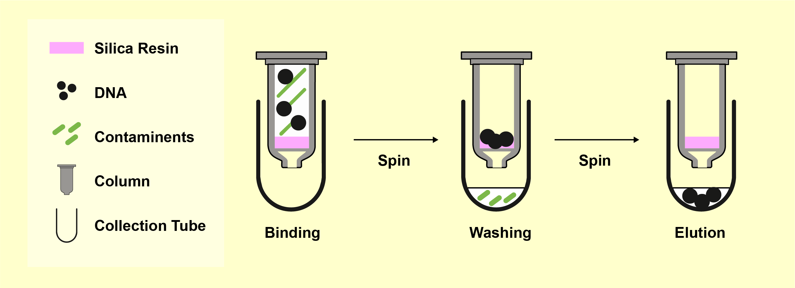

Zymo Cleanup¶
After confirming your PCR reaction on a gel, the next step is to purify the DNA. This is essential for most cloning workflows, especially Golden Gate and restriction enzyme-based cloning. Although it is optional for Gibson, cleanup helps remove components from the PCR that may interfere with downstream steps.
Why Cleanup Is Necessary¶
PCR reactions contain:
- Unreacted dNTPs
- Active polymerase
- Buffers and salts
These can interfere with cloning enzymes, particularly enzymes like BsaI that generate sticky ends. Polymerase can fill in sticky overhangs, preventing proper ligation. Cleanup eliminates these components.
How It Works¶

Figure: Stepwise diagram of silica column cleanup showing binding, washing, and elution. DNA binds to the pink resin in the column, contaminants are washed away, and purified DNA is eluted into a clean tube.
DNA binds to silica in the presence of a chaotropic salt—usually guanidinium thiocyanate—found in Zymo's ADB buffer. This same chemical also denatures proteins like polymerases.
The basic workflow:
- Mix PCR product with ADB buffer
- Pass through a silica column by centrifugation
- Wash the column with 70% ethanol (provided as PE or Wash buffer)
- Dry the column by spinning
- Elute DNA with water or EB Buffer
EB is preferred because it's a dilute Tris buffer. Pure water can absorb CO₂ and become slightly acidic, which may reduce recovery of DNA.
Be mindful: know where your DNA is at each step. Many errors involve discarding the DNA by accident.
Zymo vs. Other Kits¶
We use the Zymo DNA Clean & Concentrator-5 kit because it allows elution in as little as 6 µL, which is sometimes useful for concentrating the DNA. However, there are many equivalent products on the market.
Popular Alternative: Qiagen QIAquick Gel Extraction Kit (purple column)
- Typically used to extract DNA from excised gel slices
- Requires special buffer if binding from a gel
- Similar silica-based chemistry
Note: for small DNA fragments (<250 bp), improve binding by mixing 1 part ADB + 3 parts isopropanol before loading.
Lab Sheet Overview¶
Title: TPcon6-P6: Zymo
Location of PCR product: Enzyme freezer, PCR rack labeled “to Zymo”
| Reaction | Tube Label | Side Label | Elution Volume | Destination |
|---|---|---|---|---|
| 79 | z79 | P6 z79 | 25 µL | zymos1/___ |
Each PCR reaction you process will yield a new labeled Eppendorf tube with your cleaned-up DNA.
Step-by-Step: Regular Zymo Cleanup¶
This protocol removes polymerase, dNTPs, salts, and oligos from your PCR. It also works for cleaning up restriction digests.
- Add 180 µL of Zymo ADB buffer (brown bottle) to your PCR reaction.
- Transfer the mixture to a Zymo column (small clear tube labeled for cleanup).
- Spin at full speed for 15 seconds, discard the flow-through.
- Add 200 µL of PE Buffer to the column.
- Spin at full speed for 15 seconds, discard the flow-through.
- Add another 200 µL of PE Buffer.
- Spin at full speed for 15 seconds, discard the flow-through.
- Spin at full speed for 90 seconds to dry the column, discard flow-through.
- Place the column in a clean 1.5 mL Eppendorf tube. Add the elution volume (see lab sheet) of EB Buffer or water directly to the center of the column matrix. Avoid letting liquid stick to the walls.
- Spin at full speed for 45 seconds to collect your purified DNA.